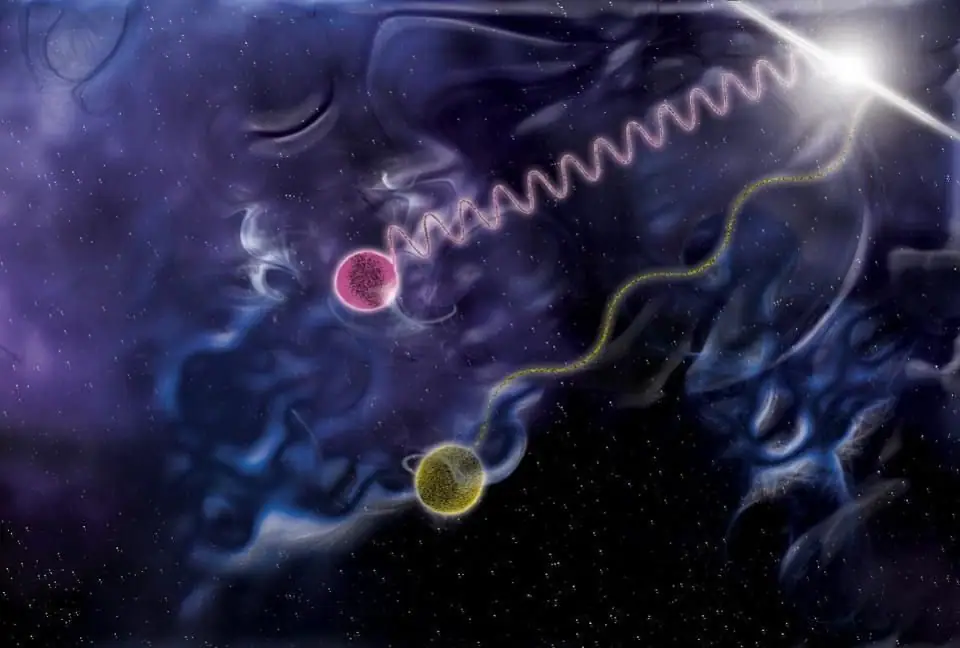
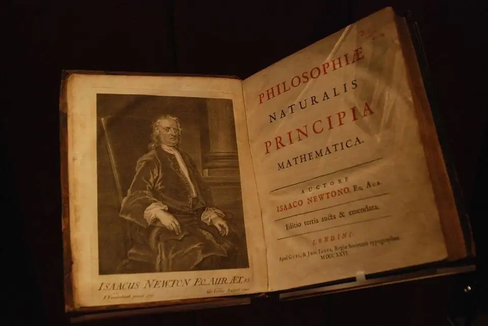
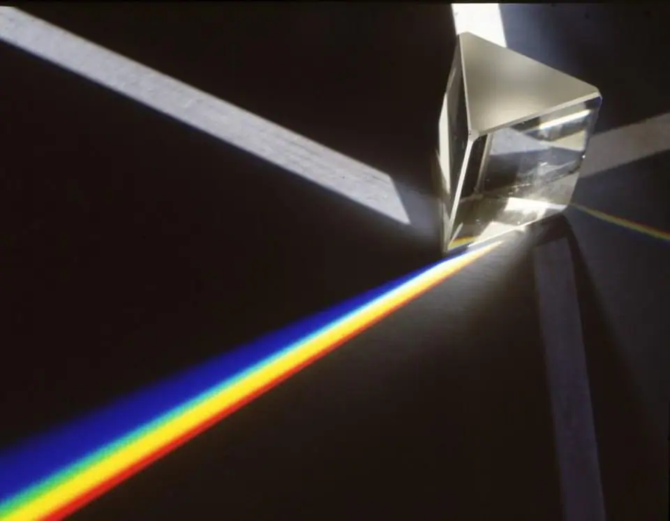
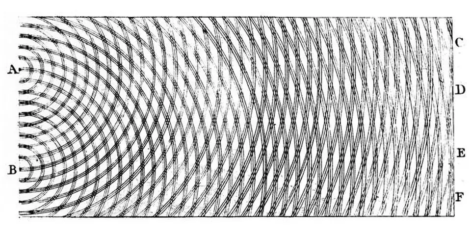
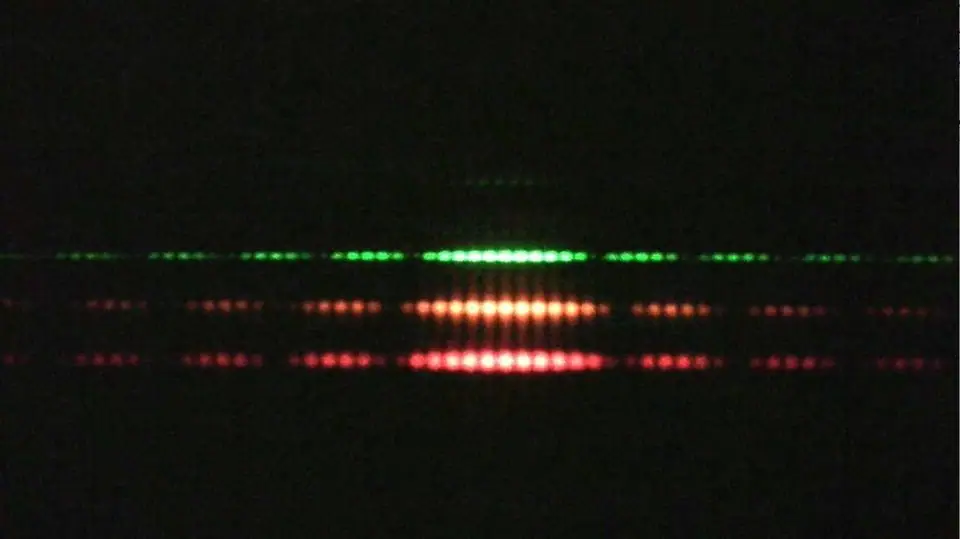
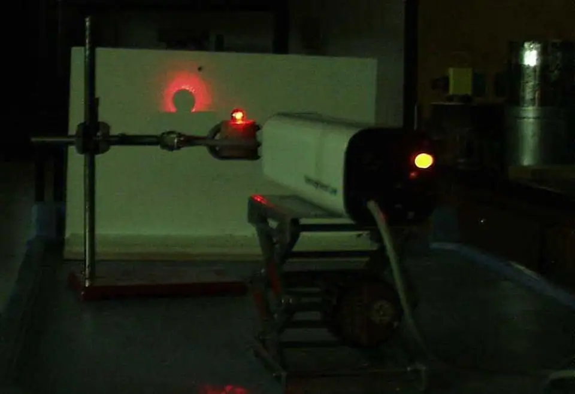
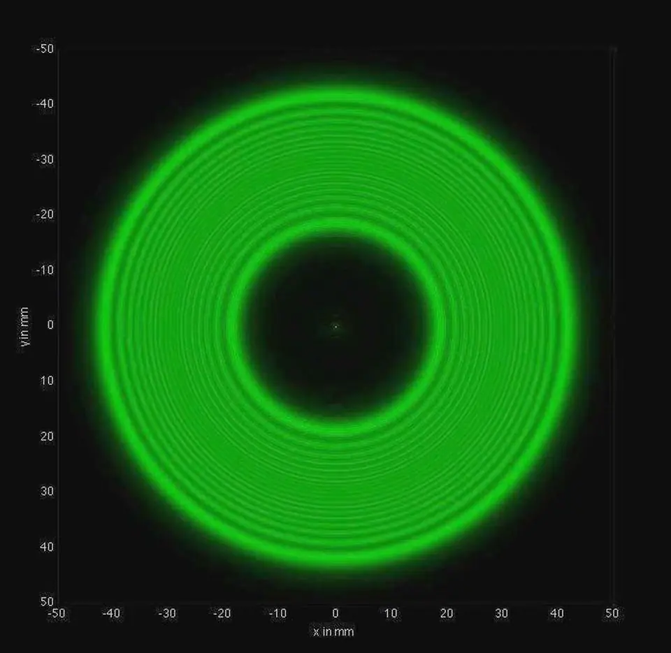
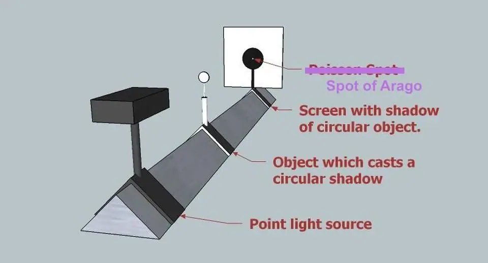
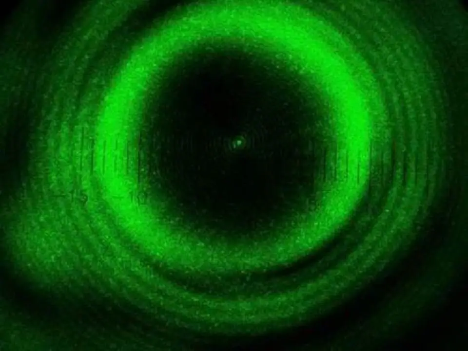
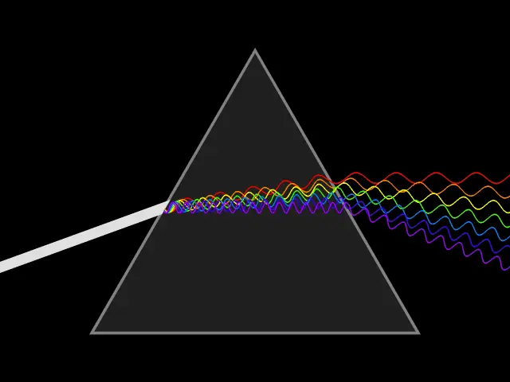

Articles ·
The Greatest Mistake In The History Of Physics

We all love our most cherished ideas about how the world and the Universe works. Our conception of reality is often inextricably intertwined with our ideas of who we are. But to be a scientist is to be prepared to doubt all of it each and every time we put it to the test. All it takes is one observation, measurement, or experiment that conflicts with the predictions of your theory, and you have to consider revising or throwing out your picture of reality. If you can reproduce that scientific test and show, convincingly, that it is inconsistent with the prevailing theory, you’ve set the stage for a scientific revolution. But if you aren’t willing to put your theory or assumption to the test, you might just make the greatest mistake in the history of physics.

It’s human nature to have heroes: people we look up to, admire, and aspire to be like. In physics, the greatest hero for many centuries was Isaac Newton. Newton represented the pinnacle of the scientific achievements of humanity. His theory of universal gravitation described, faultlessly, everything from the motion of comets and planets and moons to how objects fell on Earth for centuries. His description of how objects moved, including his laws of motion and how they were influenced by forces and accelerations, remains valid under nearly all circumstances, even today. To challenge Newton was a fool’s errand.
Which is why, in the early 19th century, the young French scientist, Augustin-Jean Fresnel, should have expected the trouble he was about to get into.

Although it isn’t as well-known today as his work on mechanics or gravitation, Newton was also one of the pioneers in explaining how light worked. He explained reflection and refraction, absorption and transmission, and even how white light was composed of colors. Light rays bent when they went from air into water and back again, and at every surface there was a reflective component and a component that was transmitted through.
MORE FROM FORBES
His “corpuscular” theory of light was particle-based, and his idea that light was a ray agreed with a wide variety of experiments. Although there was a wave theory of light that was contemporary with Newton’s, put forth by Christiaan Huygens, it couldn’t explain the prism experiments. Newton’s Opticks, like his mechanics and gravitation, was a winner.

But right around the dawn of the 19th century, it started to run into trouble. Thomas Young ran a now-classic experiment where he passed light through a double slit: two narrow slits separated by an extremely small distance. Instead of light behaving like a corpuscle, where it would either pass through one slit or the other, it displayed an interference pattern: a series of light-and-dark bands.
Moreover, the pattern of the bands was determined by two tunable experimental parameters: the spacing between the slit and the color of the light. If red light corresponded to long-wavelength light and blue corresponded to short-wavelength light, then light behaved exactly as you’d expect if it were a wave. Young’s double-slit experiments only made sense if light had a fundamentally wavelike nature.

Still, Newton’s successes couldn’t be ignored. The nature of light became a controversial topic in the early 19th century among scientists. In 1818, the French Academy of Sciences sponsored a competition to explain light. Was it a wave? Was it a particle? How can you test it, and how can you verify that test?
Augustin-Jean Fresnel entered this competition despite being trained as a civil engineer, not as a physicist or mathematician. He had formulated a new wave theory of light that he was tremendously excited about, largely based on Huygens’ 17th century work and Young’s recent experimental results. The stage was set for the greatest mistake in all of physics to occur.

After submitting his entry, one of the judges, the famed physicist and mathematician Simeon Poisson, investigated Fresnel’s theory in gory detail. If light were a corpuscle, as Newton would have it, it would simply travel in a straight line through space. But if light were a wave, it would have to interfere and diffract when it encountered a barrier, a slit, or an “edge” to a surface. Different geometric configurations would lead to different specific patterns, but this general rule holds.
Poisson imagined light of a monochrome color: a single wavelength in Fresnel’s theory. Imagine this light makes a cone-like shape, and encounters a spherical object. In Newton’s theory, you get a circle-shaped shadow, with light surrounding it. But in Fresnel’s theory, as Poisson demonstrated, there should be a single, bright point at the very center of the shadow. This prediction, Poisson asserted, was clearly absurd.

Poisson attempted to disprove Fresnel’s theory by showing that it led to a logical fallacy: reductio ad absurdum. Poisson’s idea was to derive a prediction made by the light-as-a-wave theory that would have such an absurd consequence that it must be false. If the prediction was absurd, the wave theory of light must be false. Newton was right; Fresnel was wrong. Case closed.
Except, that itself is the greatest mistake in the history of physics! You cannot draw a conclusion, no matter how obvious it seems, without performing the crucial experiment. Physics is not decided by elegance, by beauty, by the straightforwardness of arguments, or by debate. It is settled by appealing to nature itself, and that means performing the relevant experiment.

Thankfully, for Fresnel and for science, the head of the judging committee would have none of Poisson’s shenanigans. Standing up for not only Fresnel but for the process of scientific inquiry in general, François Arago, who later became much more famous as a politician, abolitionist, and even prime minister of France, performed the deciding experiment himself. He fashioned a spherical obstacle and shone monochromatic light around it, checking for the wave theory’s prediction of constructive interference. Right at the center of the shadow, a bright spot of light could easily be seen. Even though the predictions of Fresnel’s theory seemed absurd, the experimental evidence was right there to validate it. Absurd or not, nature had spoken.

A great mistake you can make in physics is to assume you know what the answer is going to be in advance. An even greater mistake is to assume that you don’t even need to perform a test, because your intuition tells you what is or isn’t acceptable to nature itself. But physics is not always an intuitive science, and for that reason, we must always resort to experiments, observations, and measurable tests of our theories.
Without that approach, we would never have overthrown Aristotle’s view of nature. We never would have discovered special relativity, quantum mechanics, or our current theory of gravity: Einstein’s General Relativity. And, quite certainly, we would never have discovered the wave nature of light without it, either.

It’s been 200 years since the greatest mistake in the history of physics. The fact that this mistake turned out to be of little consequence is only due to the scientific integrity of François Arago, who wasn’t afraid to stand up for the most important principle in all of science. We must answer our questions about the Universe by putting the Universe itself to the test. After all, in his Opticks, it was Newton himself who wrote:
My Design in this Book is not to explain the Properties of Light by Hypotheses, but to propose and prove them by Reason and Experiments.
Without experiments, we don’t have science at all. The presumption that we can look at a prediction and declare it absurd is a great failing on our part as humans. Nature may or may not be absurd; that is independent of whether it is correct or not. To get it right, you have to do the test. Without it, you’re not doing science at all.
I am a Ph.D. astrophysicist, author, and science communicator, who professes physics and astronomy at various colleges. I have won numerous awards for science writing since 2008 for my blog, Starts With A Bang, including the award for best science blog by the Institute of Ph…
Astrophysicist and author Ethan Siegel is the founder and primary writer of Starts With A Bang! His books, Treknology and Beyond The Galaxy, are available wherever books are sold.
Migrated from the AUASS website archive as published, with the formatting tidied.